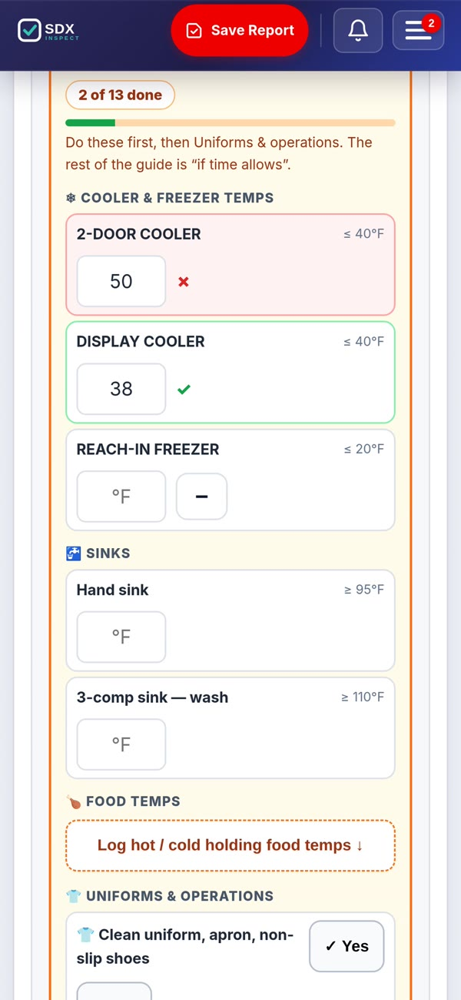
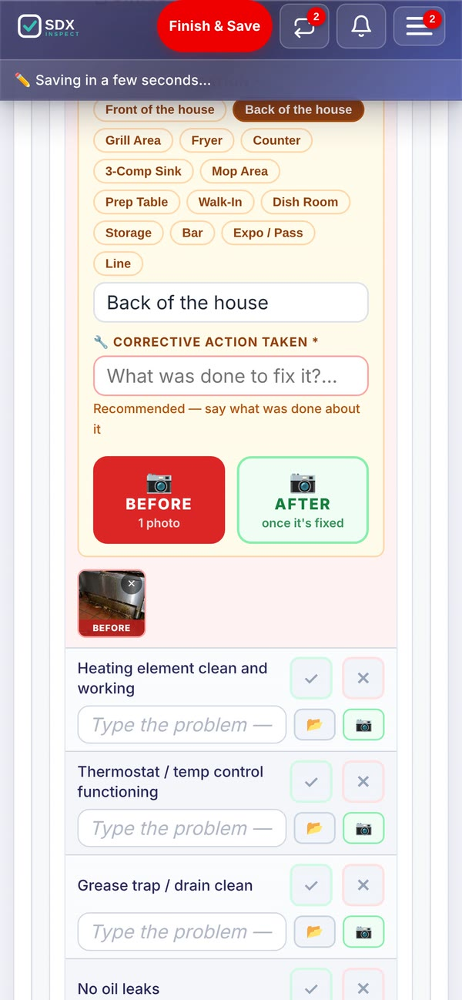
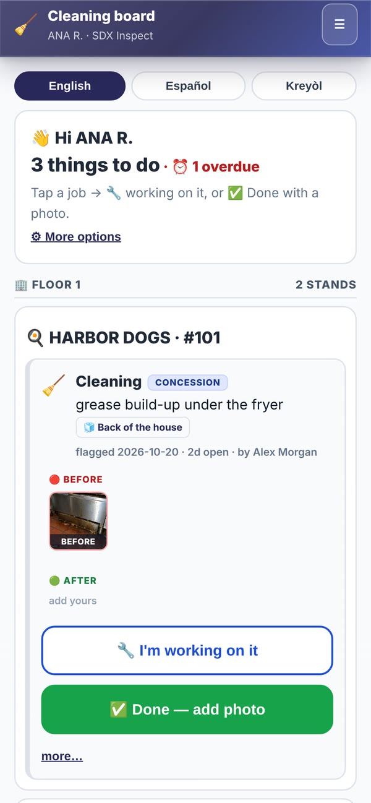
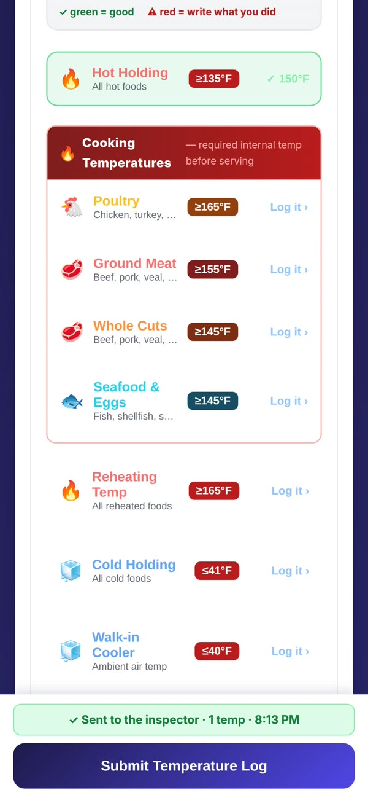

The inspection app for food stands and kitchens. Temperatures, problems with BEFORE / AFTER photos, crew boards and the report — on the phone your team already has.
Try the live demo ▶ Watch the 40-second videoDemo sign-in: badge 448800. The stands and reports are made up, and other visitors use the same demo.
See it in 40 seconds
Made from the real app on a demo venue with made-up stands. Tap a chapter to jump to it.
The video could not load here. Open the video file
Four short clips recorded in the app, on the same demo venue.
Replace paper checklists and scattered spreadsheets with one fast, modern tool.
Facilities, equipment, utensils, hygiene, and operational compliance — every section guided, nothing missed.
Log cooler and freezer readings on the spot, with FDA Food Code reference temps always one tap away.
Every report is saved the moment the walk-through ends. Download it from History as PDF, Word or Excel — the Excel carries the BEFORE / AFTER photos.
Every open problem by stand and crew, with reminders; a timeline of what got fixed and when; temperature logs and the stands that stopped logging.
Automatic checks against your official license list — mismatches surface themselves.
Inspectors sign in with their work badge. Stand teams scan their stand's QR poster and crews open their link — no badge, no password. Works offline; syncs when you reconnect.
Big buttons, plain words, English / Español / Kreyòl. Nothing to install — it opens in the browser and works offline.




How a walk-through works in SDX Inspect — five steps, start to finish.
Tap in your work badge number — your name, role, and venue load instantly.
Start the inspection timer so floor time is tracked automatically for the report.
Facilities, equipment, temperatures, hygiene, operations — mark items, note violations, attach photos as you go.
It saves itself as you go and lands in History when you finish — share it as a PDF, Word or Excel file whenever you need to.
Follow-ups list every open problem by stand and crew, with reminders and the crews' AFTER photos; Analytics shows temperature logs, the timeline of fixes and the stands that stopped logging.
Free 30-day pilot: we load your stands, print a QR poster for each one and walk your team through it. Send PILOT on Instagram or email us.
DM @sdxinspection Email us